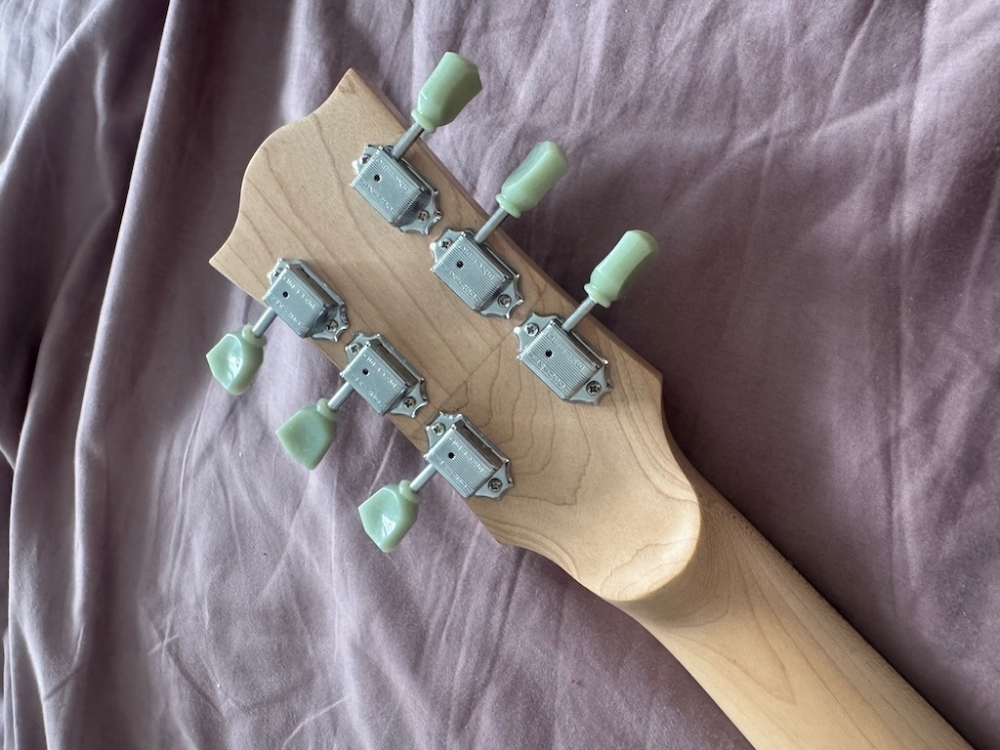
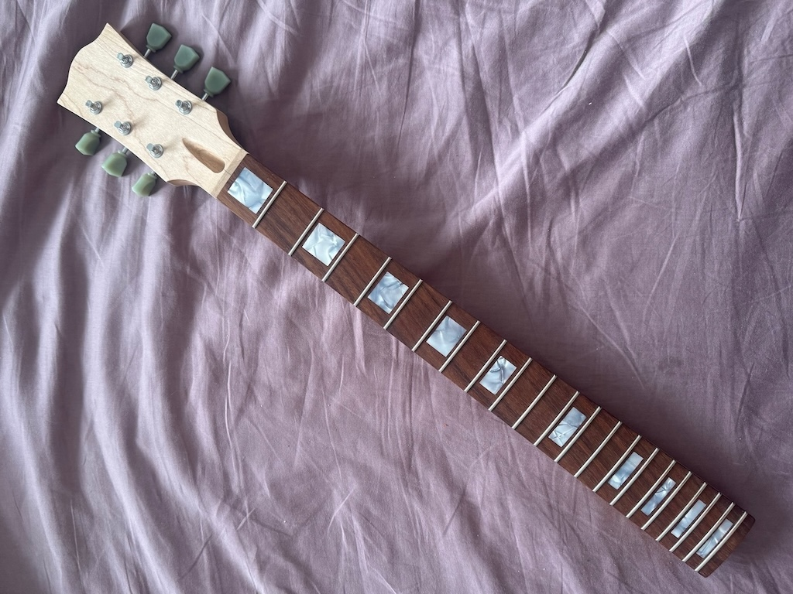
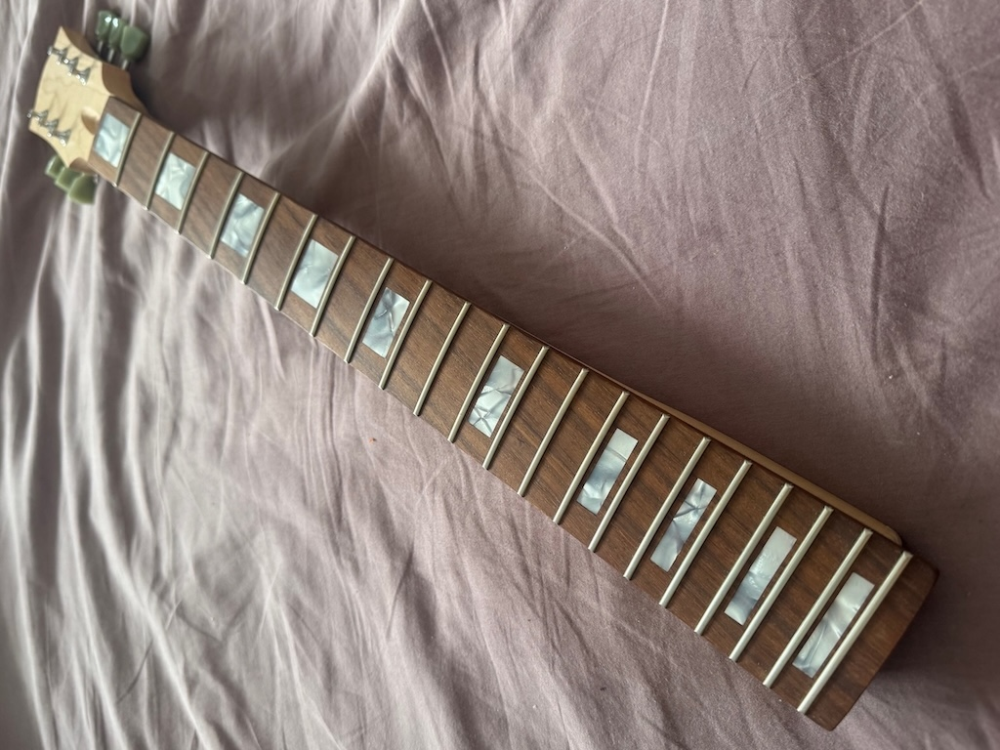
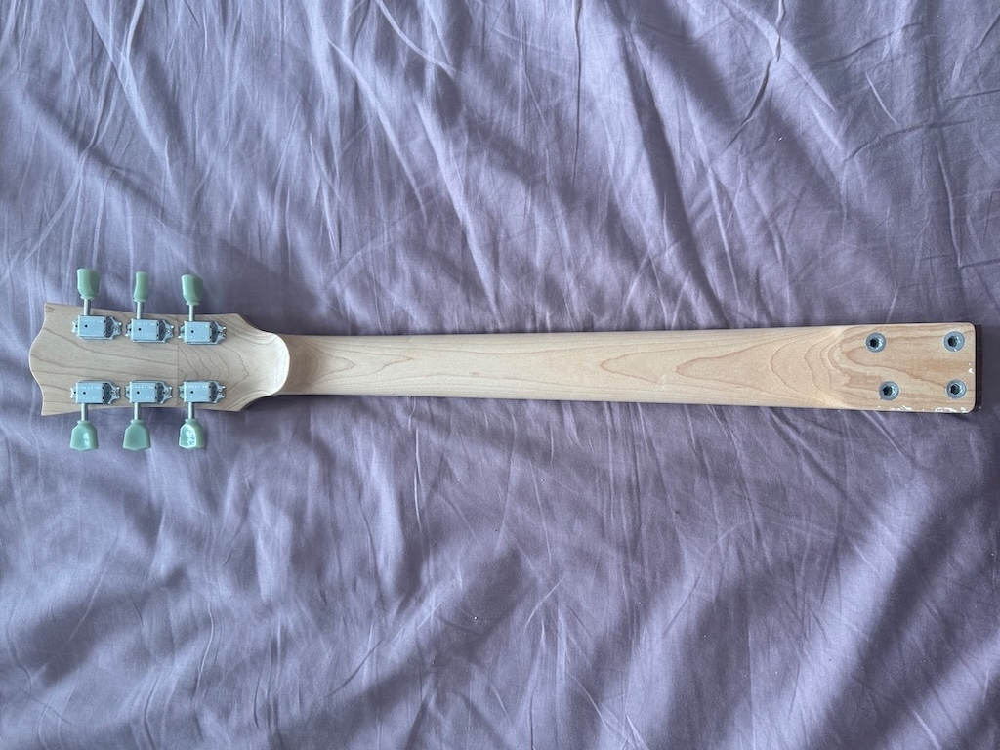
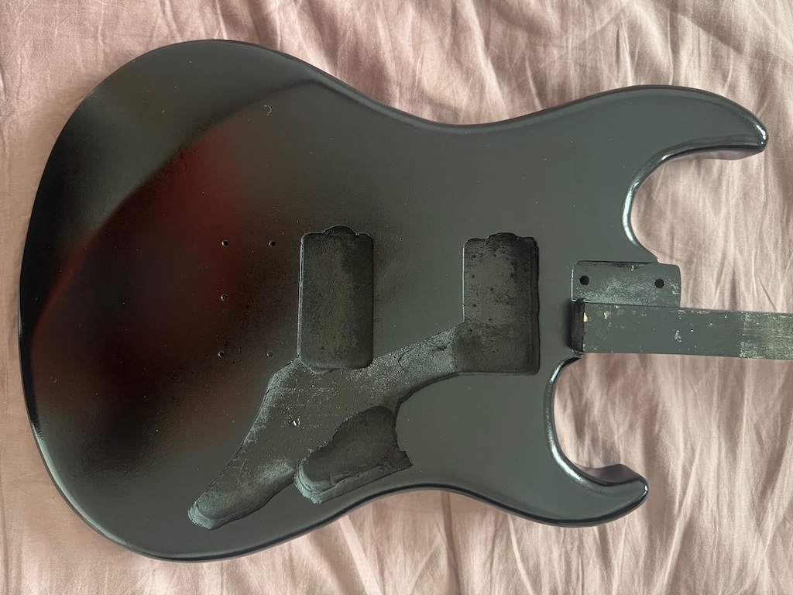
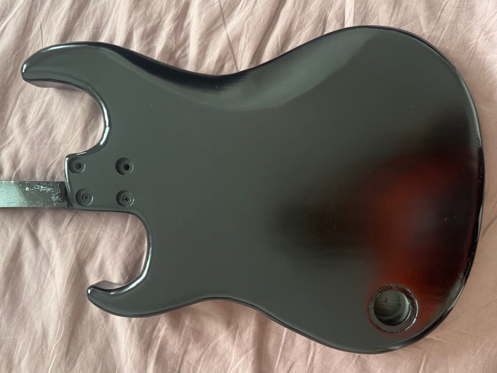

CUSTOM GUITAR: JOHN MOSHER
WORK IN PROGRESS - last updated 26/10/25
Sorry for the slow update! Took me a while to find all the materials but I think I have pretty much everything now. I've mostly been working on the neck which is always the lion's share of the work.
Neck
Neck is made in 3 parts, its a scarf joint which is traditional for a les paul, but with an extra laminate on top to hide the joint from the front as we're going for a clear finish Gluing the first bit this is the front maple laminate and gluing it on - you can see that the front surface is not flat yet Planing the front surface of the head flat and square
The neck gets roughly bandsawed out then routed very accurately
(not pictured is the routing of th truss rod and carbon fibre
reinforcement channels)
Planing the front surface of the head flat and square
The neck gets roughly bandsawed out then routed very accurately
(not pictured is the routing of th truss rod and carbon fibre
reinforcement channels)

Head
To make the head shape perfectly accurate I 3d printed a template to rout around with a template bit After routing (and a better template)
After routing (and a better template)
 Roughing out the volute on the back of the neck to make it
super comfortable to play
Roughing out the volute on the back of the neck to make it
super comfortable to play
 final neck before gluing the fretboard and carving the
back
final neck before gluing the fretboard and carving the
back

Fretboard
3d printed sanding block to make sure the radius is perfectly 10.5 inches. Fretboard after most of the sanding that needs to be done rough cut the perloid slowly sanding back to the scalpel lines to ensure tiny
tolerances for inlay
slowly sanding back to the scalpel lines to ensure tiny
tolerances for inlay

Body
Made a plywood template for the body for rough bandsawing followed by precision routing roughed out on bandsaw - leaving the area around the neck
pocket as you don't want to do that until neck reaches its final
dimensions to ensure a snug fit.
roughed out on bandsaw - leaving the area around the neck
pocket as you don't want to do that until neck reaches its final
dimensions to ensure a snug fit.
 Most of the hardware
Most of the hardware
November 2024 Update
Most of this time was taken up by doing the square inlays
Gluing the pearloid material into each rectangular hole that has been hand chiseled to within 0.1mm tolerance or so Sanding back the inlay material to the fingerboard
Sanding back the inlay material to the fingerboard
 The inlay material is now flush with the fingerboard
The inlay material is now flush with the fingerboard
 truss rod and carbon fibre reinforcement fixed in, ready for
gluing fingerboard
truss rod and carbon fibre reinforcement fixed in, ready for
gluing fingerboard
 Gluing the fingerboard to the neck - needs a lot of
clamps!
Gluing the fingerboard to the neck - needs a lot of
clamps!
 Refining the body shape based on the template using a
router
Refining the body shape based on the template using a
router
 Already rounded over the body, about to carving the back of the
body to make it more comfortable to play
Already rounded over the body, about to carving the back of the
body to make it more comfortable to play
 Routed out holes for hardware and done the top comfort carve,
with a slight arced summit as per the design
Routed out holes for hardware and done the top comfort carve,
with a slight arced summit as per the design
 dry fitting the neck to the body to make sure everything fits
perfectly, and dropping in hardware where it will be
dry fitting the neck to the body to make sure everything fits
perfectly, and dropping in hardware where it will be

What's left to do
Body
- Fine sanding/filling
- Drill neck bolt holes
- Paint job
- Relicing
- Cut scratch plate
- Hardware installation
Neck
- Carve neck profile
- Fit frets
- Finish fingerboard profile
- Fret filing/levelling/dressing
- Apply finish
Final steps
- Assemble
- Set up
- Deliver
October 2025 Update
Some text
Headstock is carved  Fingerboard prepared, tuners installed and frets leveled  Another angle  Neck profile is carved and finished in tru-oil. Threaded inserts to bolt neck to body for maximum sustain.  Aquamarine nitrocellulose lacquer applied under 12 coats of black so it will show through with age/relicing  Back of body What's left to do
- final coats of nitro clear coat, and leave to cure
- sand and polish
- Relicing
- Cut scratch plate
- Hardware installation
Final steps
- Assemble
- Set up
- Deliver